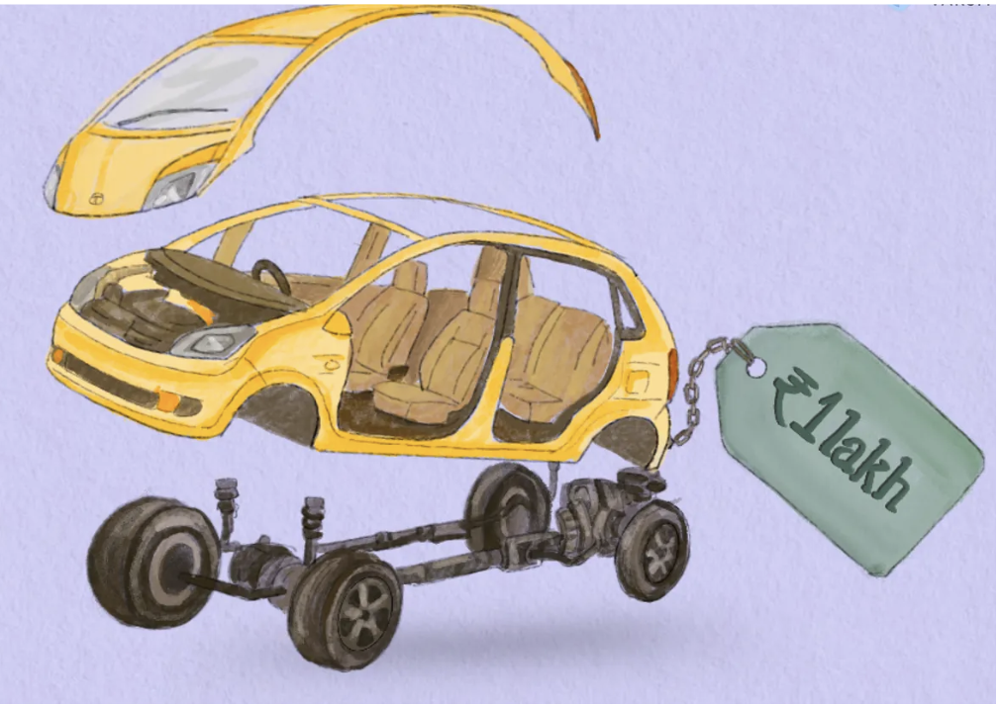

Tata Nano Strategy - Market Analysis
Case Study | Strategy | Product Repositioning
Reimagining Affordable Mobility in India

Years after Tata Nano first hit the roads, the promise of affordable mobility still matters—but the market has evolved. As part of the strategy project, we worked on relaunching Nano 2.0. We revisited what worked, confronted what didn’t, and redesigned it for what first-time buyers actually want today: trust, dignity, and smart, efficient mobility


Problem
Tata Nano was launched with a bold ambition: to democratize car ownership in India. While the product succeeded in redefining cost engineering, it failed to achieve sustained market adoption.
Despite addressing affordability, Nano struggled with:
- Negative brand perception as the "cheapest car," which reduced aspirational appeal in a status-conscious market
- Erosion of trust due to safety concerns and perceived quality compromises
- A narrow definition of affordability, focused on upfront price rather than total cost of ownership and emotional value
As a result, the very segment Nano aimed to serve—aspiring first-time car buyers—opted for used cars, two-wheelers, or slightly more expensive but aspirational hatchbacks.
Insight
Our diagnosis revealed that entry-level car buyers are not purely price-driven.
Key insights:
- Affordability is holistic: fuel efficiency, maintenance cost, safety, and resale value matter as much as purchase price
- Car ownership is emotional: first-time buyers seek pride, social validation, and a sense of progress
- “Cheap” carries stigma: value-conscious customers still want dignity, safety, and choice
The gap in the market was clear: There were few offerings that balanced low lifetime cost with aspirational design and credibility.
Strategy—Nano 2.0
Nano 2.0 repositions the product from “the cheapest car” to “the most valuable small car.”
1. Repositioning the Brand
- Shift messaging from price-led to value-led
- Frame Nano as smart, efficient, and accessible rather than cheap
- Reinforce emotional ownership through influencer and celebrity advocacy
2. Product & Pricing Redesign
- Introduce three variants (Base, Smart, Premium) to eliminate one-size-fits-all stigma
- Enable customization so customers pay for features they value
- Price across ₹2.5–5.2 lakh to balance accessibility with perceived quality
3. Safety & Trust Reset
- Launch safety-certified variants meeting essential standards
- Improve build quality, reliability, and after-sales service
- Partner with safety organizations like Bharat NCAP and the International Road Federation to restore credibility
4. Value-Focused Ownership Model
- Emphasize fuel efficiency, low maintenance, and higher lifetime value
- Position Nano 2.0 as an ideal upgrade from two-wheelers for urban and semi-urban users
Expected Impact
Nano 2.0 is designed to deliver impact across adoption, perception, and sustainability:
- Higher adoption among first-time buyers by aligning affordability with aspiration
- Improved brand equity by shedding the “cheap car” stigma
- Lower defect and recall rates through stronger quality and safety standards
- Sustainable unit economics via tiered pricing, customization, and service revenue
Potential metrics
Following might be some of the metrics on which we can compare Tata Nano Vs Nano 2.0
- Units sold vs. original Nano launch
- Customer satisfaction and safety ratings
- Defect, recall, and service metrics
Why This Case Matters
This project demonstrates how product failure is often a strategy failure, not an execution one—and how reframing customer value can unlock adoption without abandoning cost discipline.